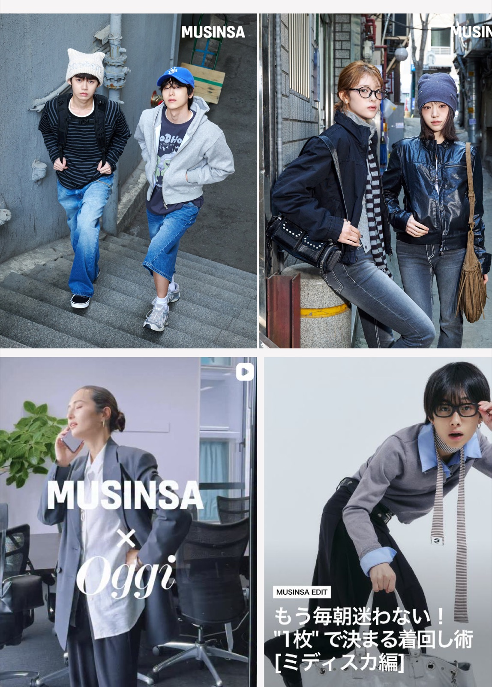

광고 대행사 운영 PM
크리에이팁 · 2025.06 – 현재Action
- 월별 캠페인 기획 기반 콘텐츠 제작 및 운영 (월 20건 이상)
- 인플루언서 협업 및 콘텐츠 제작 프로세스 리딩
- 콘텐츠 업로드 및 성과 데이터 분석, 인사이트 도출
- 전체 캠페인 일정 및 운영 스케줄 관리
Result
- 안정적인 콘텐츠 제작 및 운영 체계 구축
- 2025 일본 지역 매출 전년 대비 약 5배 성장
- 도쿄 팝업스토어 3일간 방문객 1만 명 이상 유입
- 인플루언서 협업 콘텐츠 공개 3일 만에 조회수 약 100만 회 LINK
- ER(참여율) 3%, CPE(조회당 비용) 300원대 고효율 달성
